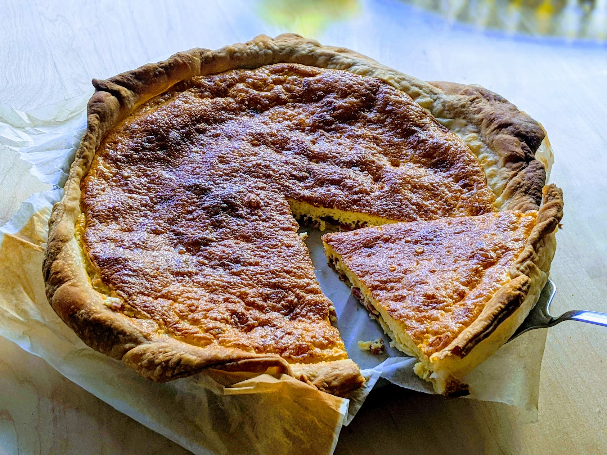

Quiche lorraine

Pour une tarte, en fonction de la taille du moule :
- Un rouleau de pâte feuilletée (ou de pâte brisée)
- Un demi-litre de crème fraîche épaisse
- 150-200g de lard salé
- 100-150g de jambon blanc
- 4-6 œufs
- Un peu de poivre et de paprika
- Préchauffer le four à 180°C, faire cuire doucement les lardons dans une poêle.
- Dans un saladier, verser la crème, les œufs, le poivre et une pincée de paprika (ne pas saler). Bien mélanger.
- Égoutter les lardons pour qu'ils perdent un peu leur gras, et rajouter les dés de jambon dans la poêle pour les faire dorer un peu.
- Étaler la pâte feuilletée dans un moule, la piquer un peu partout avec une fourchette, et l'enfourner environ un quart d'heure, jusqu'à ce qu'elle dore un peu.
- Ajouter les dés de jambon et les lardons dans le saladier, bien mélanger. Verser le contenu du saladier sur la pâte en commençant par la viande.
- Enfourner 45 minutes environ, jusqu'à ce que ça soit joli sur le dessus.
Note : si on a trop de garniture et que ça ne tient pas dans la pâte, s'assurer que tous les morceaux solides soient sur la pâte, et conserver le reste pour plus tard y ajouter quelques œufs et en faire une base d'omelette ou d'œufs brouillés améliorée (le lard donne un chouette goût en plus).
Note 2 : en Suisse, trouver de la crème fraîche épaisse est essentiellement impossible (surtout, ne pas utiliser la "crème fraîche" que l'on peut trouver en supermarché, c'est un piège, c'est en fait de la crème acidulée, totalement inadaptée pour une quiche). On peut la remplacer par une moitié de crème liquide allégée, et une moitié de double crème de la Gruyère.